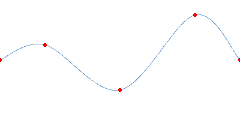

PathCurve QML Type
Defines a point on a Catmull-Rom curve. More...
| Import Statement: | import QtQuick |
Properties
Detailed Description
PathCurve provides an easy way to specify a curve passing directly through a set of points. Typically multiple PathCurves are used in a series, as the following example demonstrates:
import QtQuick Canvas { width: 400; height: 200 contextType: "2d" Path { id: myPath startX: 0; startY: 100 PathCurve { x: 75; y: 75 } PathCurve { x: 200; y: 150 } PathCurve { x: 325; y: 25 } PathCurve { x: 400; y: 100 } } onPaint: { context.strokeStyle = Qt.rgba(.4,.6,.8); context.path = myPath; context.stroke(); } }
This example produces the following path (with the starting point and PathCurve points highlighted in red):

See also Path, PathLine, PathQuad, PathCubic, PathArc, and PathSvg.